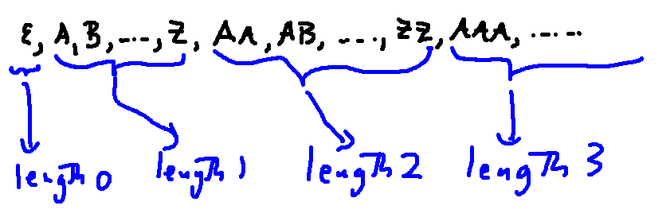

Recall from the last video how we showed that \(\mathbb{N}^2\) is countable, i.e. the same size as \(\mathbb{N}\).
And the one-to-one function in the hard direction was \(g(p,q) = 2^p3^q\).
The same method can be used to show that \(\mathbb{N}^k\) is countable, for any (finite) k. We just need to use k prime numbers when building the formula for g.
Similarly, any finite product of countable sets is countable. Suppose we have sets \(A_1,\ldots,A_k\), where each \(A_i\) is countable. Because \(A_i\) is countable, we can assign a natural number to each of its elements. So then we can represent an element of \(A_1\times\ldots \times A_k\) as a k-tuple of natural numbers. A k-tuple of natural numbers is just an element of \(\mathbb{N}^k\), and we know that set is countable.
In particular, \(\mathbb{Z}^k\) is countable, for any natural number k.
Also notice that these products have to be finite. An infinite product of countable sets is typically not countable.
A countable union of countable sets is also countable. Let's call our sets \(U_0,U_1, U_2, \ldots\) We're going to represent each element x in the union using a pair of natural numbers (p,q).
So we have a one-to-one function from the countable union to \(\mathbb{N}^2\), which we know to be countable.
Finally, the set of rational numbers \(\mathbb{Q}\) is countable. Each rational number can be represented by a (unique) integer fraction in lowest terms. We can think of a fraction \(\frac{p}{q}\) as a pair of integers (p,q). And we know that \(\mathbb{Z}^2\) is countable.
In some future class, you may be required to prove that a particular sets is countable or not countable. We're not asking for that in this class. But it's important to be able to recognize whether a set is countable.
Let's think about the rationals vs. the real numbers. A rational number can be written down as a finite decimal or a decimal that ends in a repeating pattern.
finite decimal: 3.225
repeating decimal: \(7.5\overline{358}\)
Both of these can be written down using a finite number of characters. We could make this more obvious by replacing the overline with a programming-style notation like this:
finite decimal: 3.225
repeating decimal: 7.5{358}
Irrational numbers have decimal representations that go on forever, without a repeating pattern. A few of them (e.g. \(\pi\) ) happen to have a shorthand representation that is finite. But most irrational numbers have no finite representation. We'll see that the set of irrational numbers (and therefore the set of real numbers) isn't countable.
Let's look at a final example of a countable set. Suppose that M is a finite alphabet. To keep this concrete, let's suppose that M contains the set of uppercase letters. Recall that \(M^*\) is the set of all finite-length strings made from characters in M, including the empty string (\(\epsilon\)).
Claim: \(M^*\) is countably infinite (and thus countable).
One way to do this is to explicitly put all strings from \(M^*\) into an order, indexed by the integers. We can do this as follows:
With a bit of work, you could figure out where each length group starts and exactly how to compute the position of any input string.

So this gives us a bijection between \(M^*\) and \(\mathbb{N}\).
Now, let's prove the claim by constructing two one-to-one functions.
Part 1: make a one-to-one function f from \(\mathbb{N}\) to \(M^*\).
One choice is to let f map each natural number n into a string of n A's.

And \(f(0) = \epsilon\).
This function is very far from being a bijection, but it's definitely one-to-one.
Part 2: make a one-to-one function g from \(M^*\) to \(\mathbb{N}\).
To construct g, we're going to map each letter into a 2-digit code.
A 65
B 66
C 67
....
I 73
....
U 85
....
Z 90
If s is a string of letters, we'll make g(s) by concatenating the letter codes. E.g. g("UIUC")=85738567. Because the codes are all exactly two digits, we can easily decode one of these output numbers to get the input string that generated it. So g is one-to-one.
Well, oops. What about \(g(\epsilon)\)? We can set it equal to any natural number that can't be confused with the encodings of longer strings. For example, \(g(\epsilon) = 0\).
Since we have a one-to-one function from \(\mathbb{N}\) to \(M^*\), we know that \(|\mathbb{N}| \le |M^*|\). Since we have a one-to-one function from \(M^*\) to \(\mathbb{N}\) we know that \(|M^*| \le |\mathbb{N}|\). By the Cantor-Schroeder-Bernstein Theorem, this means that \(|M^*| = |\mathbb{N}|\). So \(M^*\) is countably infinite.